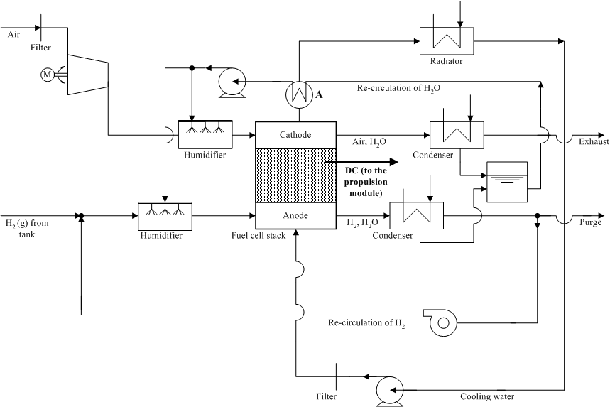

This fuel cell system model (the KTH model) was developed by the Royal Institute of Technology (KTH), Stockholm, Sweden, as a part of a post-graduate project. It is a semi-empirical model with thermal and water management. However, the KTH model is a steady-state model. Furthermore, the fuel cell stack component of the model is theoretical, partly based on work by Springer et al., 1991 and accounts for phase changes of the water in the fuel cell stack. The model’s approach allows for stack definition, i.e., calculation of the number of cells based on the required maximum power output of the system. With assumptions of active area and stoichiometric coefficients of hydrogen and air, it could be used for any fuel cell stack, giving the model a significant flexibility.
The auxiliary system includes a hydrogen tank and power demand calculations for individual pumps and fans. It also contains maps with compressor data from Opcon Autorotor. The system allows hydrogen to be re-circulated and allows for the water produced in the stack to be condensed and used in the humidifiers. Heat produced in the fuel cell stack is transferred to a cooling loop. The model also accounts for frictional losses found in lines, elbows and filters.
Figure 1 shows a schematic of the model. The PEM fuel cell system operates on pure hydrogen. The inlet gases are humidified in separate humidifiers. The stack outlet gases are assumed to be fully saturated (i.e., RH = 100%). The exhaust flows are cooled in the condensers where part of their water content is condensed out and recovered for reuse in the humidification process.

Figure 1. Schematic view over the KTH model.
The drive cycle power demand translates into a vehicle power request and that in turn into a net fuel cell power output request. The fuel cell system power request takes into account the losses of the power converters connecting the fuel cell system to the vehicle drivetrain.
Inputs for the KTH model are similar to those for the VT model. Examples of unique features include the water transport across the fuel cell, purge percentage (the amount of the anode exhaust to be removed from the system) and pipe diameter and length.
The model outputs are the net fuel cell system power, the efficiency of the fuel cell and system and system characteristics such as mass flow of the reactants, product, inert material and coolant, heat developed in the stack, individual auxiliary parasitic loads, water balance of the fuel cell system (including humidifiers and condensers).
For more information, please go to
K. Johansson (Haraldsson), Modelling of a Proton Exchange Membrane Fuel Cell System for Automotive Applications, Licentiate of Engineering Thesis, Royal Institute of Technology, Stockholm, Sweden (2001), http://media.lib.kth.se:8080/licengrefhit.asp?licnr=1309

KH 08/29/03